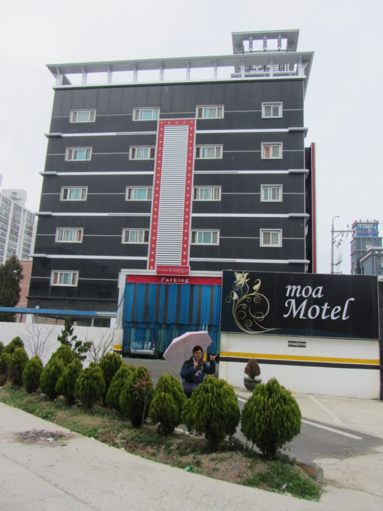
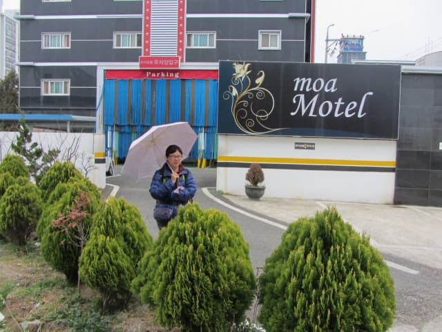

4.5.2017 (星期三)
早上六時半起床, 拉開窗簾一看, 外面正下著大雨, 而且雨勢很大, 心裡一沉, 又要為應否按原定計劃進行而煩惱。
按原定計劃, 今天整天都會逗留在海南遊覽, 上午乘巴士往韓國本土最南端的土末 (땅끝 Ttangkkeut), 回程順道往大興寺 (대흥사 Daeheungsa Temple), 傍晚才乘巴士往順天。土末在海邊, 大興寺在山區, 這兩個景點都最受天氣影響, 不宜在下雨天前往。想了一會, 土末是我很多年前已經希望遊覽的地方, 現在就在海南, 沒理由不去, 再者, 不知日後有沒有機會再來這裡, 縱使多大雨, 也應該堅持去吧! 就是基於這理由, 最後決定冒雨前往土末, 至於大興寺, 唯有遊覽完土末後, 看當時的天氣再作決定算了。
網上沒有海南往土末的巴士資料, 很困難才在 Naver 搜尋到海南綜合巴士客運站往土末的巴士時刻, 顯示早上只有 8:00 和 8:50 這兩個班次, 因 8:00 太早, 所以計劃搭乘 8:50 這班次往土末。
錯誤的決定 沒有嘗試將背囊寄放在酒店
梳洗完畢, 在房間吃了昨晚在超級市場買的蛋糕和碗麵, 於早上八時十五分離開 moa Motel, 準備搭乘早上8:50的巴士往土末。因海南綜合巴士客運站的大堂有置物箱, 而且根據經驗, 一般汽車酒店都不可以寄放行李的, 所以沒有嘗試將背囊寄放在酒店, 這錯誤的決定幾乎令我們負著重重的背囊遊覽土末, 如果是, 在大風雨下的土末, 肯定是痛苦的回憶。


海南綜合巴士客運站內的置物箱無法使用! 都是傳統的可靠
離開 moa Motel, 沿馬路步行五分鐘便抵達海南綜合巴士客運站, 走到大堂內的置物箱, 打算寄存行李後才購買車票。置物箱是電子控制, 用指紋識別密碼。因看不懂韓文, 也恐怕弄錯, 便找了一位當地乘客幫助, 過程其實都頗簡單: 將背囊放入其中一個空置的置物箱, 按下 「Lock」鍵, 輸入置物箱號碼, 將手指放在指紋識別器上, 然後付款。問題就是出現在付款這步驟, 根本不接受付款!
接著又找另一位當地乘客幫助, 試了幾次, 問題都是一樣! 眼看時間已經是早上八時四十二分, 原來已經攪了二十多分鐘! 離開車只有不足十分鐘, 沒辦法了, 唯有負著背囊往土末! 便匆匆走到售票處, 告訴職員買兩張 8:50 往土末 (땅끝)的車票, 每位是 5,100 韓元, 但十分奇怪, 職員在車票上寫上 9:20! 並不是 8:50! 不知道是 Naver 的資料錯誤, 還是巴士臨時更改時間。
也好, 還有時間再嘗試寄存行李在置物箱, 好不容易找到車站內一位職員幫助, 但最後都是同樣無法通過付款這步驟! 唉! 答案非常簡單啦! 置物箱的電子系統是壞的, 根本無法使用! 想起來, 都是傳統的可靠! 想一想, 也應該慶幸沒有成功放置背囊在置物箱內, 否則, 如果是取出時出現問題, 假如已經買了車票, 又要趕上車, 這情況想起也怕怕! 這經驗也教訓了我們, 永遠是成功寄存了或取回行李才好買車票, 也教訓了我們盡量少用韓國的置物箱, 可免則免!
海南綜合巴士客運站內的置物箱是無法使用的!
置物箱的使用過程十分簡單, 單看圖片已明白, 應該不會是過程出錯。
寄存: 按「LOCK」紅色按鈕 보 → 輸入置物箱號碼 → 將手指放在指紋識別器上2次 → 支付費用 → 列印收據 → 關門
機器不接受付款!